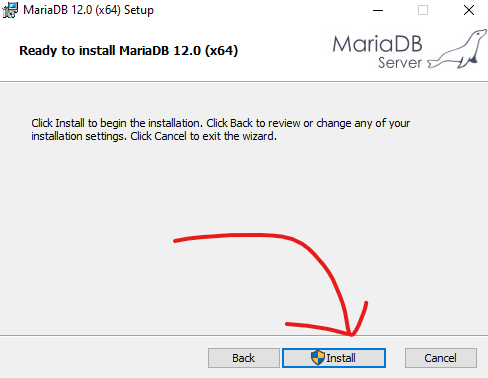

Veritabanı İşlemleri
Veritabanı Nedir?
Veritabanı, verileri düzenli bir şekilde depolamak için kullanılan bir sistemdir. Veritabanları genellikle web dünyasında kullanıcı verilerini, hesap bilgilerini ve şifreleri saklamak için kullanılır.
Bu sayfada veritabanı işlemleri MariaDB ve HeidiSQL ile anlatılacaktır.
MariaDB ve HeidiSQL
MariaDB, SQL tabanlı bir veritabanı yönetim sistemidir ve genellikle HeidiSQL ile grafik arayüz (GUI) sunar.
Kurulum
Öncelikle MariaDB’nin resmi sitesine gidip kurulum dosyasını indirelim.
Ardından indirilen .msi dosyasını çalıştıralım.
Bu kısımda unutmayacağınız bir şifre girin.

Yükleme işlemi tamamlandıktan sonra ‘Finish’ deyip kurulumu tamamlıyoruz.
Ayrıca MariaDB kurulumu sırasında HeidiSQL otomatik olarak indirilir.
HeidiSQL ile Veritabanı Oluşturma
Masaüstündeki HeidiSQL simgesine çift tıklayarak açıyoruz. Ardından:
Ardından ‘Aç’ butonuna basarak veritabanımızı açıyoruz.
Açılan pencerenin sol kısmına tıklayıp Yeni > Veritabanı seçeneğini seçerek veritabanımızın adını girip ‘Tamam’ butonuna basıyoruz. Tablo oluşturmak için, verileri daha düzenli gruplandırmak adına veritabanımıza sol tıklayıp açılan menüde sağ tıklayarak Yeni > Tablo seçeneğini seçiyoruz ve tablomuzun adını giriyoruz.
Şimdi tablomuzda olacak veri türlerini girmemiz gerekiyor. Alttaki menüde ‘Yeni’ butonuna basalım. Veri türü adını ‘int1’, tipini ‘INT’ yapalım ve bir tane daha oluşturup bu sefer veri türü adını ‘yazi1’, tipini ‘TEXT’ yapalım. Ardından Ctrl + S kombinasyonu ile yaptıklarımızı kaydedelim.
C# ile Veritabanı İşlemleri
MariaDB’yi kurduk, şimdi C# ile veri alıp vermeyi ve silmeyi öğrenelim. C#’ta MySQL tabanlı veritabanlarına bağlanmak için Visual Studio’da Araçlar > NuGet Paket Yöneticisi > Çözüm için NuGet Paketlerini Yönet seçeneğine gidip ‘MySqlConnector’ aratarak ilk çıkan paketi kuralım.
Fonksiyonları
using MySql.Data.MySqlClient;
static void Main(string[] args)
{
string connStr = "Server=localhost;" + // Veritabanının yolu (URL). localhost, yani kendi bilgisayarımızda olduğu için
"Port=3306;" + // Veritabanının portu
"Database=test;" + // Veritabanının adı
"Uid=root;" + // Kullanıcı adı. Veri çekmek ve yazmak için root
"Pwd=sifren;"; // Kullanıcının şifresi, kurulumda belirlediğimiz şifre
// Tabloyu oluştur (bir kere çalıştır)
TabloOlustur(connStr);
// CRUD işlemlerini teker teker test et
// 1. Create
KullaniciEkle(connStr, "Ahmet", 15);
KullaniciEkle(connStr, "Zeynep", 17);
// 2. Read
KullanicilariOku(connStr);
// 3. Update
KullaniciGuncelle(connStr, 1, "Ahmet Yeni", 16);
KullanicilariOku(connStr);
// 4. Delete
KullaniciSil(connStr, 2);
KullanicilariOku(connStr);
}
// Tablo Oluşturma
static void TabloOlustur(string connStr)
{
using var conn = new MySqlConnection(connStr); // Bağlantı bilgileri ile az önce oluşturduğumuz veritabanına bağlanıyoruz
conn.Open(); // Bağlantıyı açıyoruz
string sql = @"
CREATE TABLE IF NOT EXISTS Kullanicilar (
Id INT AUTO_INCREMENT PRIMARY KEY,
Ad VARCHAR(100) NOT NULL,
Yas INT
)"; // Kullanicilar adında bir tabloya Ad ve Yas sütunlarını ekliyoruz
using var cmd = new MySqlCommand(sql, conn); // MySqlCommand ile sorguya çeviriyoruz
cmd.ExecuteNonQuery(); // Sorguyu çalıştırıyoruz
}
// CREATE: Kullanıcı Ekleme
static void KullaniciEkle(string connStr, string ad, int yas)
{
using var conn = new MySqlConnection(connStr);
conn.Open();
string sql = "INSERT INTO Kullanicilar (Ad, Yas) VALUES (@ad, @yas)"; // Sorguyu oluşturuyoruz. @ ile değişkenlerimizi tanımlayarak SQL Injection’ı önlüyoruz
using var cmd = new MySqlCommand(sql, conn);
cmd.Parameters.AddWithValue("@ad", ad); // Değişkenlerin yerine, fonksiyondan gelen parametreleri yerleştiriyoruz
cmd.Parameters.AddWithValue("@yas", yas); // Değişkenlerin yerine, fonksiyondan gelen parametreleri yerleştiriyoruz
cmd.ExecuteNonQuery();
}
// READ: Kullanıcıları Okuma
static void KullanicilariOku(string connStr)
{
using var conn = new MySqlConnection(connStr);
conn.Open();
string sql = "SELECT * FROM Kullanicilar"; // Kullanicilar tablosundaki verileri çekiyoruz
using var cmd = new MySqlCommand(sql, conn);
using var reader = cmd.ExecuteReader(); // Verileri okuyoruz ve reader değişkenine atarak daha kolay ayrıştırıyoruz
Console.WriteLine("\nKullanıcılar:");
if (!reader.HasRows) //
{ // Tablonun içinde veri
Console.WriteLine("Kayıt bulunamadı."); // yoksa hata mesajı verelim
return; //
}
while (reader.Read()) //
{ //
int id = reader.GetInt32("Id"); //
string ad = reader.GetString("Ad"); // Verileri tek tek okuyup yazdırma
int yas = reader.GetInt32("Yas"); //
Console.WriteLine($"ID: {id}, Ad: {ad}, Yaş: {yas}"); //
} //
}
// UPDATE: Kullanıcı Güncelleme
static void KullaniciGuncelle(string connStr, int id, string yeniAd, int yeniYas)
{
using var conn = new MySqlConnection(connStr);
conn.Open();
string sql = "UPDATE Kullanicilar SET Ad = @ad, Yas = @yas WHERE Id = @id"; // Belirli bir ID’deki veriyi güncelleyecek
using var cmd = new MySqlCommand(sql, conn);
cmd.Parameters.AddWithValue("@ad", yeniAd); // Güncellenecek Ad
cmd.Parameters.AddWithValue("@yas", yeniYas); // Güncellenecek Yas
cmd.Parameters.AddWithValue("@id", id); // ID’si
cmd.ExecuteNonQuery();
}
// DELETE: Kullanıcı Silme
static void KullaniciSil(string connStr, int id)
{
using var conn = new MySqlConnection(connStr);
conn.Open();
string sql = "DELETE FROM Kullanicilar WHERE Id = @id"; // ID’sine göre veriyi silelim
using var cmd = new MySqlCommand(sql, conn);
cmd.Parameters.AddWithValue("@id", id);
int etkilenenSatir = cmd.ExecuteNonQuery();
Console.WriteLine(etkilenenSatir > 0 ? $"ID {id} silindi." : "Silme başarısız.");
}
Kaynakça